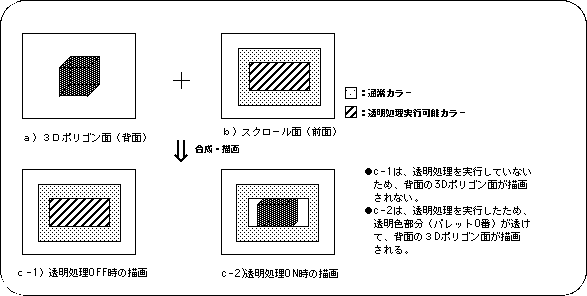
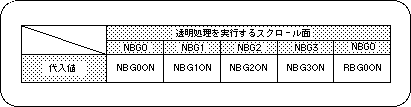
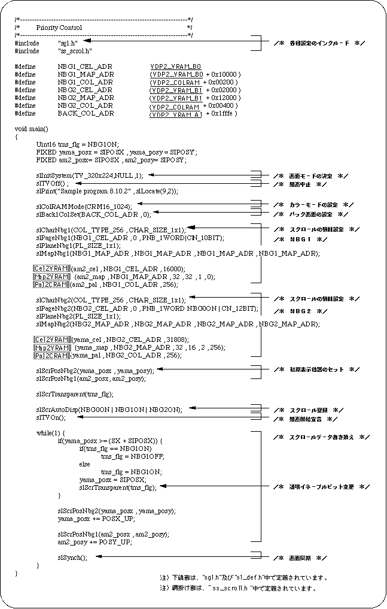
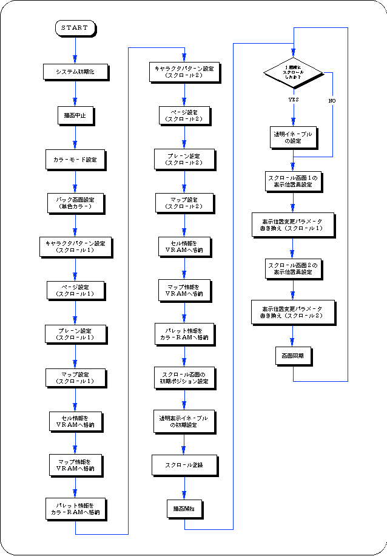

Return to previous page | Return to menu | Go to next page
In Sega Saturn, when the palette format is selected for scrolling color data, the 0th color data in one palette can be made transparent regardless of the color data originally registered.
The transparent color is a color specification that gives priority to drawing, such as scrolling behind the scroll specified by the transparent color, as if literally the dot part specified by the transparent color is transparent. Say. The figure below illustrates this.

To use the transparent color function in SGL, use the library function “slScrTransparent”.
Scrolling after using the function “slScrTransparent” is drawn according to the function specification.

Note) The above values are defined in “sl_def.h” included with the system.
The following sample program (Listing 8-8) implements the scroll transparent color processing by actually using the SGL library function “slScrTransparent”.

